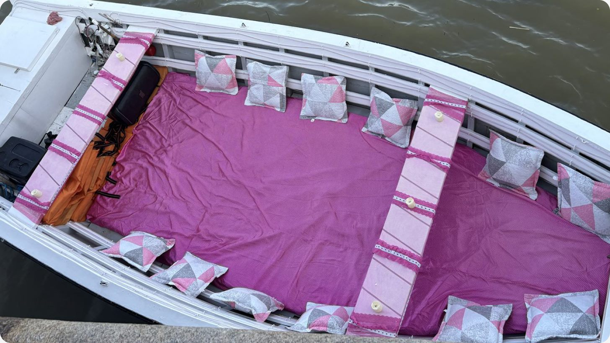
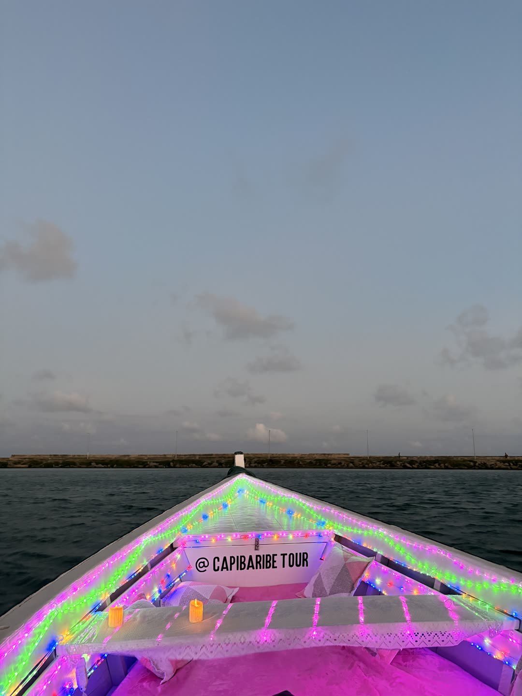
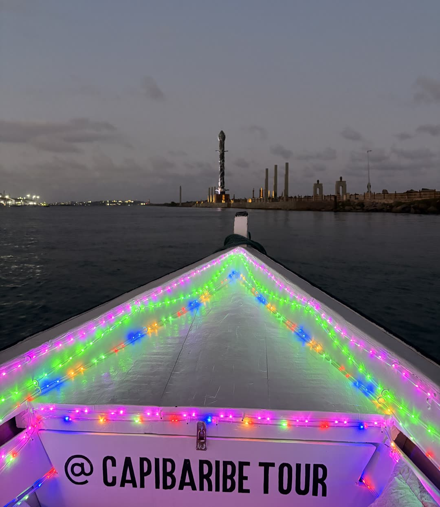

Um rio pode ter diferentes significados para as pessoas, mas para Maurílio Alves, dono da Capibaribe Tour, o rio Capibaribe virou a sua principal fonte de sustento graças ao turismo. A ideia era simples: fornecer a experiência de passeios de barco com saída do Marco Zero para quem quisesse conhecer o Recife Antigo de um jeito diferente. Só que a demanda foi tanta que o plano se transformou em algo maior. Virou empreendimento e uma boa opção para quem visita a região ou só deseja sair da mesmice da rotina.
Com quatro barcos disponíveis em quatro horários, a Capibaribe Tour oferece, desde 2021, passeios privativos de duas horas no Rio Capibaribe apresentando pontos icônicos do Recife pelo valor de R$ 75. As embarcações têm espaço para de quatro a nove pessoas e podem servir para as mais diversas ocasiões como comemorações de aniversários, confraternizações, pedidos de namoro ou casamento e encontros de amigos e familiares.

Morador de Brasília Teimosa, bairro da Zona Sul do Recife conhecido pela forte conexão com o mar, Maurílio recebeu o pedido para fazer o primeiro passeio de surpresa quando estava indo entregar cestas básicas no barco que usava emprestado do primo em uma comunidade próxima.
“A mulher foi no meu barco e quis saber com que eu trabalhava. Aí eu expliquei a ela que trabalhava de várias coisas e perguntou se eu fazia algum tipo de passeio. Eu disse que não, mas que eu conhecia o Rio Capibaribe todinho”, relembra.
Foi assim que ele foi convidado a andar de barco pelo Centro do Recife para o aniversário dessa mulher e de uma amiga. Antes, Maurílio precisava trabalhar em muitas funções com serviços pesados e cansativos para conseguir se sustentar. No total, oito pessoas participaram do percurso de três horas que seria o primeiro de muitos que Maurílio faria e mudaria a sua vida para melhor.
“Não era iluminado, não tinha acolchoado nem vela. Não tinha o que tem hoje que o pessoal geralmente vem e vê o diferencial. Eu fiz o passeio para um aniversário dela e de uma amiga dela, deu tudo certo e depois ela me perguntou se queria fazer se eu queria trabalhar com isso e eu disse que gostaria”.

A partir daí, a parceria entre Maurílio e as amigas começou a gerar frutos com a divulgação do serviço em um grupo de noivas no WhatsApp. As pessoas passaram a procurar mais informações e os passeios viralizaram nas redes sociais. O crescimento levou a criação do Instagram da Capibaribe Tour, que já soma mais 111 mil seguidores no Instagram. Para ele, o boca a boca segue sendo até hoje a maior e melhor fonte para que mais gente conheça o serviço, que se tornou uma importante opção turística para o bairro.
“Cada dia a gente está sempre fazendo o melhor da gente e dando o melhor para o cliente, que isso aí é o que levanta tudo. A gente foi trabalhando e implementando a organização dos barcos, os marinheiros são todos habilitados e tudo é organizado pela Marinha”.
Um dos principais diferenciais dos passeios da Capibaribe Tour é o cuidado que Maurílio tem com os clientes, fornecendo luzes de LED, toalhas e velas, o que demonstra a importância do trabalho para ele.
“Tem um significado muito massa, porque o que a turma normalmente conhece é o catamarã. Só que a ideia da gente foi oferecer um passeio privativo e também mostrar o Recife de um ângulo diferente.”
Maurílio também acredita que a chegada do serviço foi significativa para o Bairro do Recife e contribuiu muito para o turismo da área. O rio se tornou uma maneira diferente de se apresentar a região, que passa pelas principais pontes e mostra outros ângulos da cidade para os visitantes.

“Ajudou bastante. A gente faz muito com turismo de recepção, mas também recebe muitos turistas de fora [de outros Estados e Países]. Sempre tem indicação para visitar, um indica para o outro e a turma vem quando está de férias ou chega para fazer algum trabalho e sempre dá aquela brecha para fazer um passeio.”
Quando perguntado sobre quantos passeios são feitos mensalmente, Maurílio não soube responder por ser algo que varia bastante entre as épocas de alta e baixa temporada, mas garante que os barcos costumam sair praticamente todos os dias exceto quando o mau tempo dá as caras e faz com que as marcações agendadas sejam canceladas.
“Na alta temporada, não dá nem para contar. Até tem uma planilha, mas a gente nunca teve a ideia de contar porque são passeios durante todo o dia. A gente trabalha o dia todo e larga às onze e meia da noite do último passeio”, comenta.
Durante os períodos chuvosos, normalmente é o tempo que encontra para descansar. Na alta temporada, ele não tem um dia de folga fixo como o restante dos funcionários. Além do próprio Maurílio, a Capibaribe Tour emprega, ao todo, três marinheiros fixos e um extra, quando há a necessidade, e uma pessoa que é a responsável pelos agendamentos no WhatsApp e no Instagram do serviço.
Apesar da relevância que os passeios ganharam dentro do turismo do Bairro do Recife, nenhum auxílio nunca foi concedido para a Capibaribe Tour por parte dos órgãos públicos da cidade e do estado. O máximo já recebido foi uma medalha entregue pelo Governo de Pernambuco, que destacou a contribuição do serviço na área do turismo sustentável. Segundo o Gabinete do Centro do Recife (Recentro), 15 barqueiros estão cadastrados para realizarem o serviço atualmente.
Capibaribe Tour - Passeios de barcos no Marco Zero
Onde: Marco Zero (Av. Alfredo Lisboa, S/N – Bairro do Recife)
Valor: R$ 75 por pessoa (com capacidade mínima de 4 pessoas)
Casais pagam o valor do passeio de 4 pessoas (R$ 300)
Como agendar: Através do WhatsApp (81) 98316-7766
Funcionamento: Todos os dias, das 08h às 20h